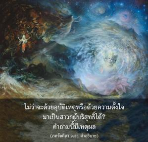
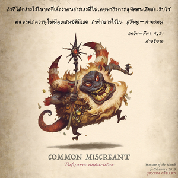
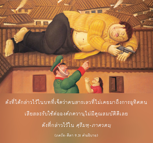
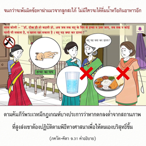

เขากลายมาเป็นผู้มีคุณธรรมและบรรลุถึงความสงบอย่างถาวรโดยรวดเร็ว โอ้ โอรสพระนาง กุนฺตี จงประกาศอย่างกล้าหาญว่าสาวกของข้าจะไม่มีวันถูกทำลาย




สิ่งนี้ไม่ควรมีการเข้าใจผิด ในบทที่เจ็ดนั้นองค์ภควานฺได้ตรัสว่าผู้ปฏิบัติในกิจกรรมที่ไม่ดีจะไม่สามารถมาเป็นสาวกได้ และผู้ไม่ใช่สาวกขององค์ภควานฺไม่มีคุณสมบัติที่ดีอันใดเลย จากนั้นมีคำถามว่าแล้วทำไมบุคคลที่ปฏิบัติในกิจกรรมอันน่ารังเกียจไม่ว่าจะด้วยอุบัติเหตุหรือด้วยความตั้งใจมาเป็นสาวกผู้บริสุทธิ์ได้ คำถามนี้มีเหตุผล ดังที่ได้กล่าวไว้ในบทที่เจ็ดว่าคนสารเลวที่ไม่เคยมาถึงการอุทิศตนเสียสละรับใช้ต่อองค์ภควานฺไม่มีคุณสมบัติดีเลย ดังที่กล่าวไว้ใน ศฺรีมทฺ-ภาควตมฺ โดยทั่วไปสาวกปฏิบัติกิจกรรมเก้าวิธีในการอุทิศตนเสียสละเป็นวิธีการชะล้างมลทินทางวัตถุทั้งปวงให้ออกจากหัวใจ และให้บุคลิกภาพสูงสุดแห่งพระเจ้าทรงประทับอยู่ภายในหัวใจ ดังนั้นมลทินบาปทั้งปวงจะถูกชะล้างออกไปโดยธรรมชาติ การระลึกถึงองค์ภควานฺอยู่ตลอดเวลาทำให้เขาบริสุทธิ์ขึ้นโดยธรรมชาติ ตามคัมภีร์พระเวทมีกฎเกณฑ์บางประการว่าหากตกลงต่ำจากสถานภาพที่สูงส่งเขาต้องปฏิบัติตามพิธีทางศาสนาเพื่อให้ตนเองบริสุทธิ์ขึ้น แต่ ณ ที่นี้ไม่มีเงื่อนไขเช่นนี้เพราะกรรมวิธีเพื่อความบริสุทธิ์อยู่ภายในหัวใจของสาวกแล้วเนื่องจากเขาระลึกถึงองค์ภควานฺอยู่ตลอดเวลา ฉะนั้นการสวดภาวนา หเร กฺฤษฺณ หเร กฺฤษฺณ กฺฤษฺณ กฺฤษฺณ หเร หเร / หเร ราม หเร ราม ราม ราม หเร หเร ควรดำเนินต่อไปโดยไม่หยุดยั้ง เช่นนี้จะปกป้องสาวกจากอุบัติเหตุตกลงต่ำทั้งหมด ดังนั้นเขาจะเป็นอิสระจากมลทินทางวัตถุทั้งปวงชั่วกัลปวสาน